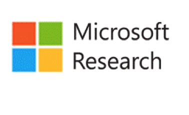
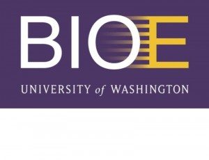
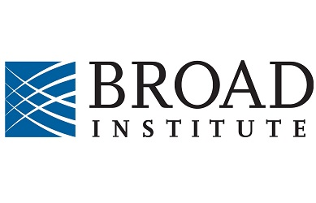

Summer 2019
AI Researcher at NASA FDL (Mountain View, USA)
 This summer, through the Frontier Development Lab, I will be working at NASA and the SETI Institute. My work will use biosensor data collected from NASA analog missions to train AI models to simulate various medical conditions that might affect astronauts.
This summer, through the Frontier Development Lab, I will be working at NASA and the SETI Institute. My work will use biosensor data collected from NASA analog missions to train AI models to simulate various medical conditions that might affect astronauts.
Summer 2018
Data Science Fellow at the UNDP Global Pulse Lab (Jakarta, Indonesia)
The Global Pulse Lab uses data science insights for policy and humanitarian action. My research used Call Data Records (CDRs) to model the impact of natural disasters in the South Pacific to support future disaster relief efforts. I also modelled internal migration trends in Vanuatu to support national ressource alloation.
Summer 2016
Software Engineering Intern at Google (London, UK)
I worked on the Chrome team for the duration of my internship. Specifically, I worked on Blink, the rendering engine used by Chromium. I built a number of features for Chrome's default media controls including a download and overflow button.
My code during the internship is open source and available at the following URL.
Summer 2015
Software Engineering Intern at Google (Mountain View, USA)
I worked on the Android Toolkit team which is responsible for products such as Google Hangouts, Plus, and Photos. I built Android animations for the infrastructure underpinning many of Google’s Android applications and created a library for other developers to incorporate the animations into their mobile applications.
2013 - 2015
Researcher within the Department of CSE at UW (Seattle, USA)
 My research focused on using technology as a tool in low-income regions to improve remote health monitoring and disease detection. I developed a mobile application that enables the diagnosis of paper-based tests on a mobile device. The software interprets test results using computer vision algorithms run on a device and provides health workers with an objective and automated diagnosis at the point-of-care.
My research focused on using technology as a tool in low-income regions to improve remote health monitoring and disease detection. I developed a mobile application that enables the diagnosis of paper-based tests on a mobile device. The software interprets test results using computer vision algorithms run on a device and provides health workers with an objective and automated diagnosis at the point-of-care.
Summer 2014
Research Intern at Microsoft Research (Bangalore, India)

I worked with CGNet Swara, a voice-based citizen journalism platform in India. Millions of people in India lack access to any mainstream media outlets and CGNet Swara provides an offline means to report and discuss information. I worked on the design, development, and pilot deployment of a mobile application that allows users to contribute and listen to CGNet Swara.
2013 - 2015
Researcher within the Department of Bioengineering (Seattle, USA)

The research team I worked with focuses on creating new measurement techniques to understand physiological and biomechanical issues that individuals with lower limb amputations face. I developed software & hardware for prosthetic devices to ameliorate socket fit using Force Sensitive Resistors.
Summer 2012
Intern at the Broad Institute of Harvard and MIT (Boston, USA)

I worked on annotations for entries during the development of the BioAssay Research Database (BARD), a large cross-center initiative focused on creating a database to hold published data about chemicals and their biological activities for researchers and those in the pharmaceutical sector.